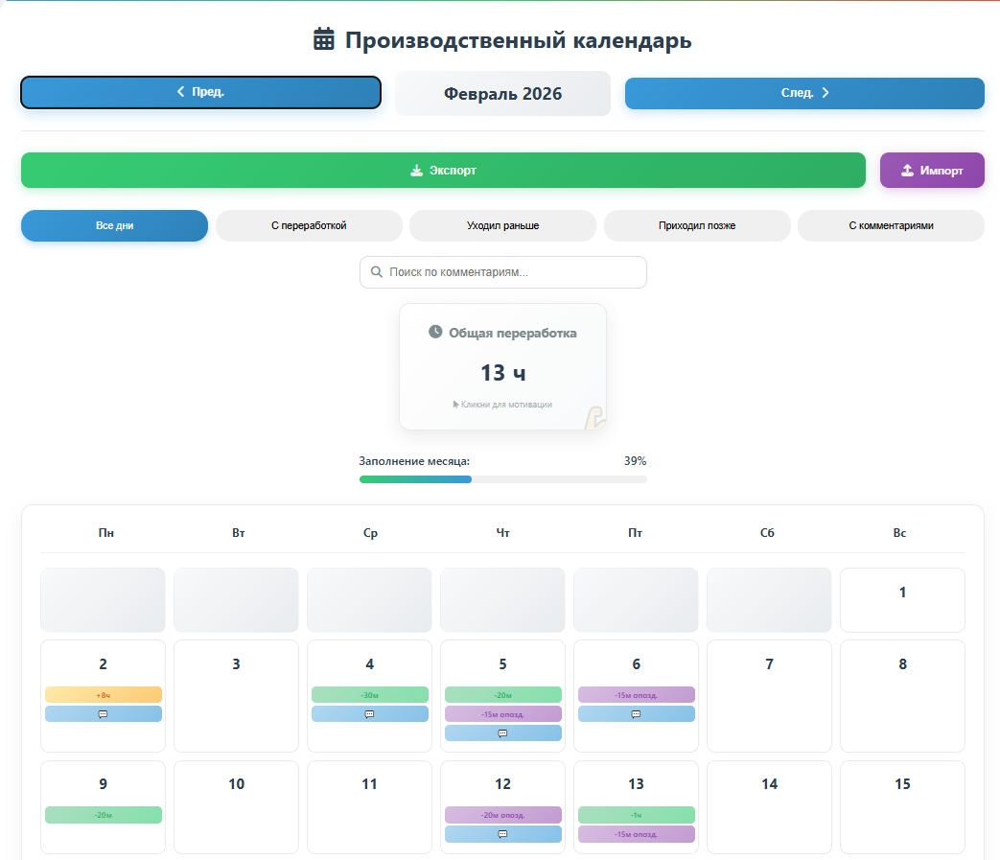
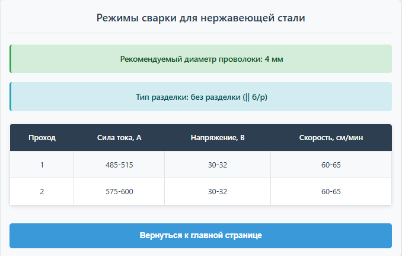
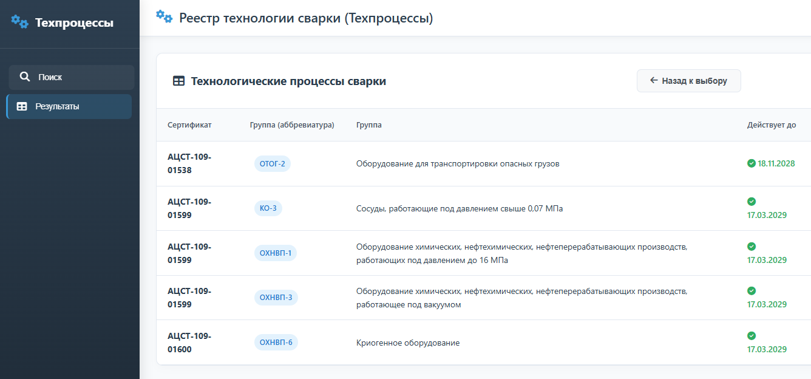
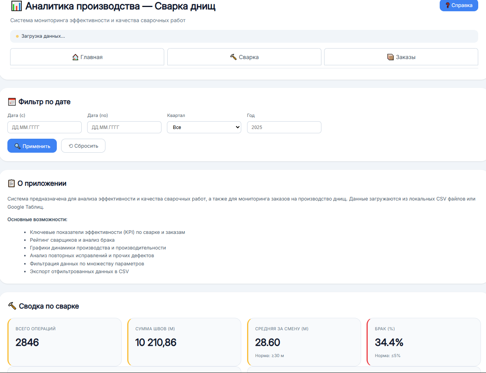

О себе
Инженер-технолог сварочного производства с расширенными компетенциями в 3D-моделировании и аналитике данных. Ищу компанию, где смогу применять эти навыки для решения реальных производственных задач, автоматизации рутины и повышения эффективности.
Ключевые компетенции:
- Сквозное проектирование в Компас-3D (модели, сборочные единицы, разработка рабочей КД).
- Аналитика и визуализация данных: создание веб-приложений и дашбордов на базе Google Sheets для мониторинга производства с использованием AI.
- Опыт командной работы и решения нестандартных задач (изучение методов ТРИЗ, призовое место на фестивале прикладного творчества).
- Развитые навыки самоорганизации и целеполагания (курс «Кроссфит личной эффективности»).
Готов браться за сложные и нешаблонные задачи, где требуется сочетание аналитического и творческого подхода.
КО(1,2,3,5), ОХНВП(1,3,6,7,10,11,15,16), ОТОГ(2)
Опыт работы
ООО Гермес-Урал
Март 2023 — наст. времяИнженер-технолог по сварочному производству
-
Подбор сварочного оборудования, расходных частей и оснастки:
- поиск поставщиков
- предварительные испытания
- участие в пусконаладке и отработке режимов
-
Аттестация в НАКС:
- сварочного оборудования
- технологии сварки
- специалистов сварочного производства
-
Автоматизация рутинных задач:
- реализовано автоматическое заполнение заявок на входной контроль
- внедрена система мониторинга производства
- организован реестр НАКС (специалисты, технология, сварочные материалы)
- Разработка технологических инструкций
- Разработка технологических карт сварки
- Разработка технологической оснастки
- Формирование и ведение аналитических данных
ПАО МЗиК
Декабрь 2017 — Март 2023Инженер-технолог 1 категории
- Подготовка производства сварочного участка
- Написание техпроцессов на сборочно-сварочные работы в TechCard
- Проведение технологической дисциплины
- Отладка и авторский надзор техпроцессов
- 3D-проектирование технологической оснастки и шаблонов (Компас-3D)
- Проработка извещений об изменении КД
- Проработка актов на брак, разработка указаний на исправления
Уральские локомотивы, ООО
Май 2017 — Декабрь 2017Инженер-технолог 1 категории
- Разработка техпроцессов в Omega Production на сборку-сварку электровозов
- Разработка технологических инструкций
- Проработка извещений об изменении
- Проработка актов на брак
- Расчет трудоемкости изготовления сборочных единиц
Завод УРБО (филиал Уралмаш НГО Холдинг)
Март 2016 — Май 2017Инженер-технолог 2 категории
- Разработка техпроцессов в TECHCARD на заготовительные и сборочно-сварочные работы
- Проработка извещений об изменении КД
- Подбор сварочных материалов и режимов сварки
- Проверка соблюдения технологической дисциплины
ООО "Промстрой"
Май 2013 — Сентябрь 2015Дефектоскопист (договор подряда)
- Ультразвуковой и рентгеновский контроль ГРС
Навыки
Продвинутый уровень
Средний уровень
Базовый уровень
Образование
Уральский федеральный университет (УрФУ)
Экономика и управление на предприятии, профессиональная переподготовка (2019)
Уральский федеральный университет (УрФУ)
Теория и технологии металлургии сварочного производства, магистр (2015)
Уральский федеральный университет (УрФУ)
Защитные и упрочняющие покрытия, бакалавриат (2013)
Повышение квалификации и курсы
Проекты
Web-приложения

WorkCalendar
Рабочий календарь для ведения табеля, отображает количество переработанного времени.
Открыть
sawWeld
Режимы автоматической сварки углеродистых, низколегированных и нержавеющих сталей. Тип разделки в зависимости от толщины.
Открыть
Hermes-Ural
Реестр специалистов сварочного производства, технологии сварки и сварочных материалов, оборудования и технической документации.
Открыть
ColdFlangingHeads
Аналитические данные по загрузке оборудования, производительность сварки, количестве дефектов.
Открыть3D модели (STL)
Загрузка 3D просмотрщика...
Реальные примеры моделей проектов. Используйте мышь для вращения, колесо для масштабирования.
Контакты
Телефон
+7 (963) 444-49-96Локация
Екатеринбург, Россия, пер. Обходной